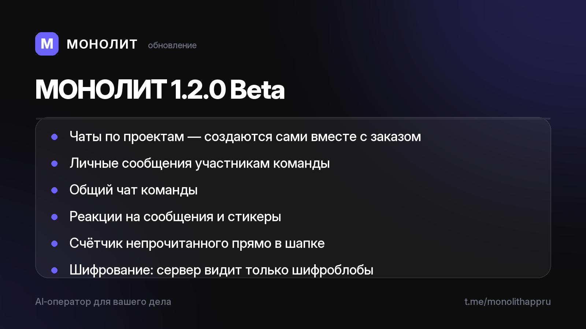

Дневник разработки · 03.07.2026
МОНОЛИТ 1.2.0 Beta — мессенджер внутри

Новое:
💬 Чаты по проектам — создаются сами вместе с заказом
👥 Личка с участниками команды и общий чат
⚡️ Реакции на сообщения, стикеры, счётчик непрочитанного в шапке
🔒 Переписка ездит через зашифрованное облако — сервер видит только шифроблобы, ключи остаются у вас
Исправили и укрепили за последние сборки:
✅ Правки сумм через чат больше не путают заказы — «убери 50 000» значит убери
🎙 Голос перестал зависать: движок распознавания сам перезапускается
📅 Перенос дедлайна теперь сам передвигает этапы и напоминания
💾 Резервная копия базы: экспорт и восстановление одним файлом
🧾 Журнал отладки — прислать диагностику можно одним тапом
Продукт в бете и растёт каждый день. Хотите пощупать на Android первыми? Напишите @sbphotoshoter — пришлю APK и помогу с установкой.
МОНОЛИТ — учёт заказов, клиентов и денег одной фразой. Windows и Android, бесплатная бета.
Скачать Читать канал